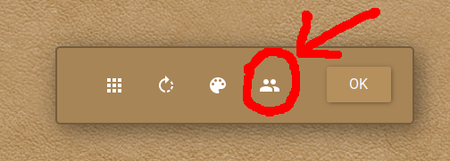

To start a collaborative jigsaw puzzle in Jigsaw explorer, follow these steps.
Note: there are sometimes some issues with Jigsaw explorer and certain Firefox security settings. If you can't get it working, try Google experiments, instructions below.
- Pick one person to set up the puzzle. That player will do steps 2 and 3 while the others wait until step 4 to do anything.
- The player setting up the game should follow either this link and then browse around to find a puzzle to do. Once you've chosen a puzzle, click the "Play this Puzzle" button. When the puzzle opens you'll see a settings menu in the center of the screen. Click on the people button:

Then click the "Create Game Link" button in the side pane.
- Copy the URL and share it with the other players using the Gather chat.
- Once the URL has been shared, everyone should click here and enter the URL when prompted. The person who set up the puzzle will need to navigate back to this page and do the same to view the puzzle embedded in gather.
To start a collaborative jigsaw puzzle in Google experiments, follow these steps.
- Pick one person to set up the puzzle. That player will do steps 2 and 3 while the others wait until step 4 to do anything.
- The player setting up the game should follow either this link and click "launch experiment". Then browse around to find a puzzle to do. Click on it, and then click "multiplayer". This will give you a URL to share.
- Copy the URL and share it with the other players using the Gather chat.
- Once the URL has been shared, everyone should click here and enter the URL when prompted. The person who set up the puzzle will need to navigate back to this page and do the same to view the puzzle embedded in gather.